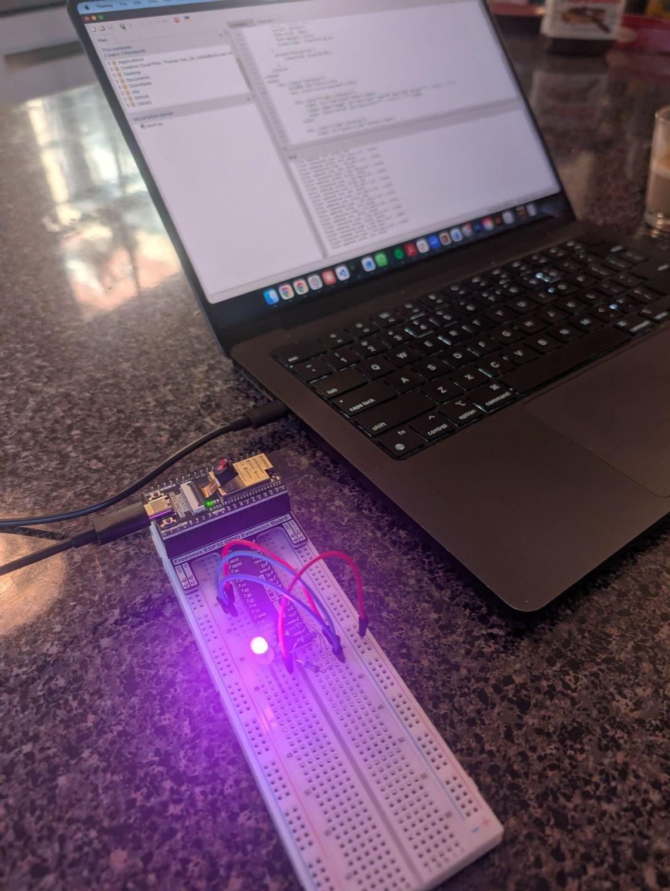
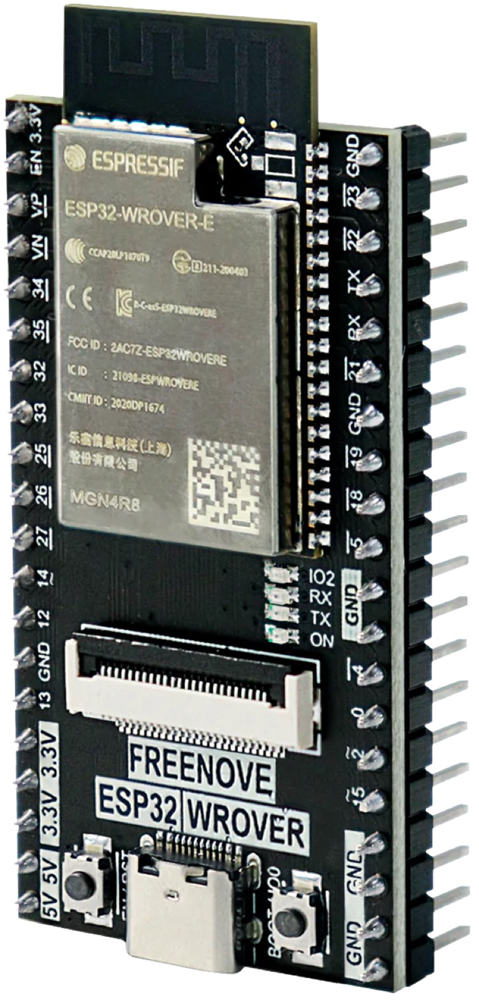
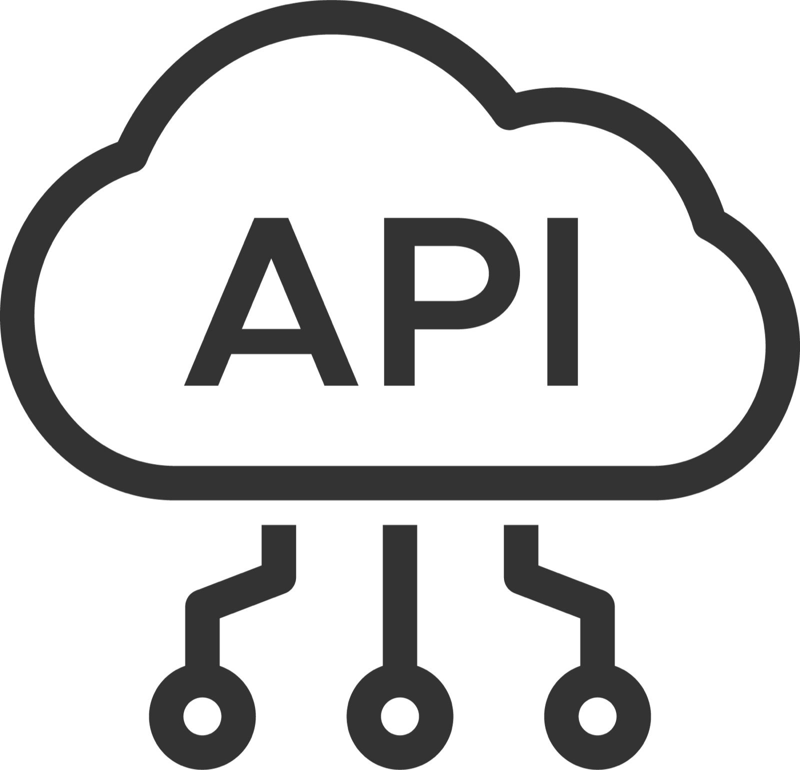
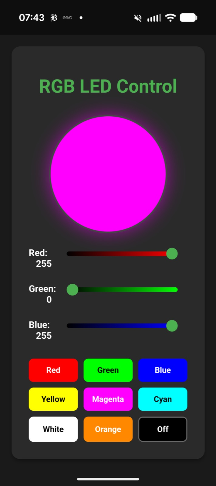
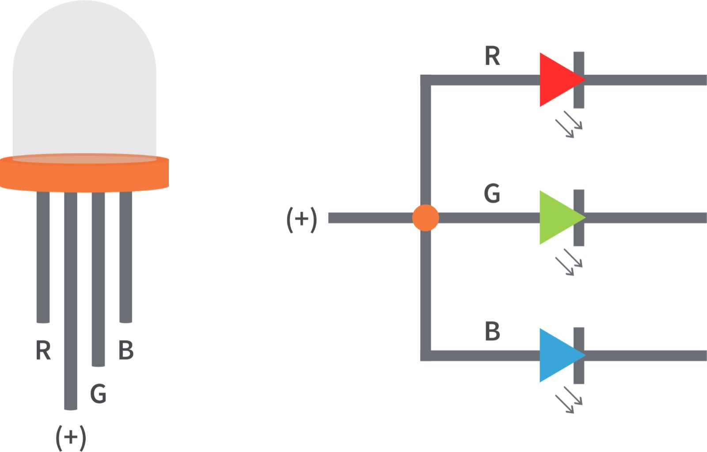
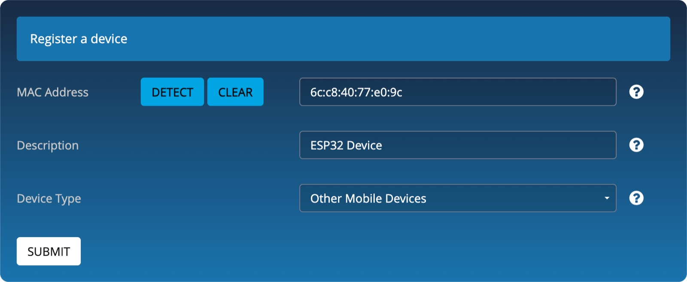

Electronics kit
You've received your electronics kit — the parts you'll wire up today.

Class 6 · Week 6 · Fall 2026
Your ESP32 can serve a web page your phone opens — no app required. Today we get it on WiFi, register it with Tufts, and build a smart light you control from the browser.

Recap
You should have all three from last class — tell us now if something is missing.
You've received your electronics kit — the parts you'll wire up today.
Thonny is installed and MicroPython is deployed to your ESP32.
go.tufts.edu/esp32
You can already build basic electronics projects with the help of AI.
What you'll learn today
Connect, reach out, and build — the three things we do in class today.
Reach your device from a phone and from a web browser — no native app needed.
Give your device internet access, higher data rates, and cloud services.
Put it all together: an RGB light you control from your phone's browser.
Connecting to an ESP32
Both work. Only one of them skips app development entirely.
Low-power, short-range communication — like connecting to a phone app. Requires a native mobile app for user interaction.
This is hard. You'd have to build and ship an app.
Internet access, higher data rates, and integration with cloud services. Users interact through a simple web browser interface — no app development needed.
Today's approach — the browser is your user interface.
WiFi connectivity
Three pieces: your device, the services it reaches, and the browser you control it from.



Client — your device reaches out to a service · Server — your device serves a page · Hybrid — the Smart Light is both.
The build
One RGB LED — three colors in a single package, sharing a common anode (+).

Connectivity with AI
No programming required — describe the project and let AI write the MicroPython.
The prompt
“I want to use an ESP32 WROVER with MicroPython to measure the distance with a HC-SR04 sensor and show it on my phone using the Tufts_Wireless open wifi hotspot. Print my ESP32 MAC address on startup.”
What the AI needs from you
The board & language
ESP32 WROVER, MicroPython
The component
HC-SR04 distance sensor
The goal
Measure distance, show it on your phone
The connection
The Tufts_Wireless open WiFi hotspot
The MAC line is extra: it prints the address you'll register with Tufts IT — next slide.
One-time setup
Tufts_Wireless needs your device's MAC address before it will let it join.
Run the code and copy your device's MAC address from the Thonny console — it looks like 6c:c8:40:77:e0:9c, but with your own numbers and letters.
The rest of the code will fail at this point — you can't reach WiFi yet. That's expected.
Go to https://device-registration.it.tufts.edu.
Clear the default MAC address, then copy your ESP32's MAC from Thonny into the field.

Now complete the wiring and restart
The Thonny console prints two addresses. Only one of them belongs in your browser.
Type the IP address from the Thonny console into your phone's browser, e.g. http://192.168.6.134. That opens your device's page.
The MAC address was only needed for Tufts IT registration — it will not open a web page.
It may take a few minutes before your device registration is active. If the page doesn't load, wait and refresh.
Under the hood
Every tap on your phone becomes a request the ESP32 answers.
Your ESP32 runs a web server that renders a web page — no separate computer needed.
The page is accessible at the device's IP address, assigned automatically when it joins Tufts_Wireless.
Your phone's browser renders the HTML that the ESP32's web server generates.
Interacting with the page sends a request to the ESP32 (e.g. http://10.243.94.14/). It reads the request, calls the sensor, and passes the data back.
Your turn
Once your device is online, the browser becomes a remote control for anything you build.
A dashboard with temperature history charts.
A virtual joystick to control motors, or a virtual switch to turn something on or off.
Save them to the device: set a thermostat temperature, or set an alarm clock.
See the status of an LED (on/off) or the current servo angle.
Before you go
Then get your device online. Next week: Robo Challenge making time — integrate everything you've learned into a working robot.
Individual assignment: electronics project — present a working circuit.
Where to find us
Office hours
go.tufts.edu/meet_tvdv
Email
thomas.van_de_velde@tufts.edu
Course materials
tvande08.github.io/ENT-164